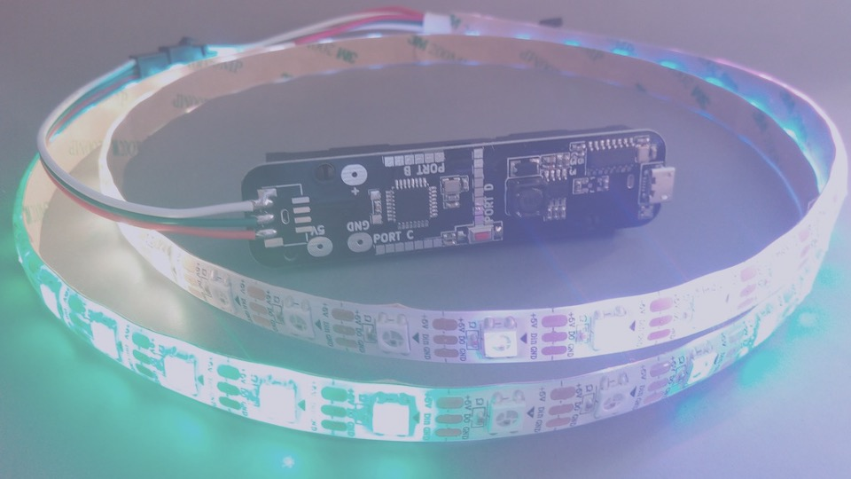
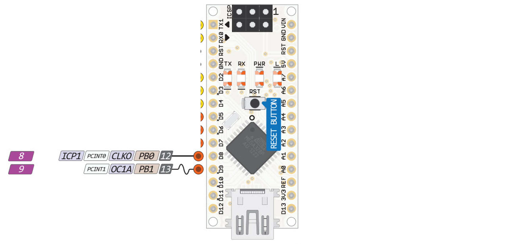
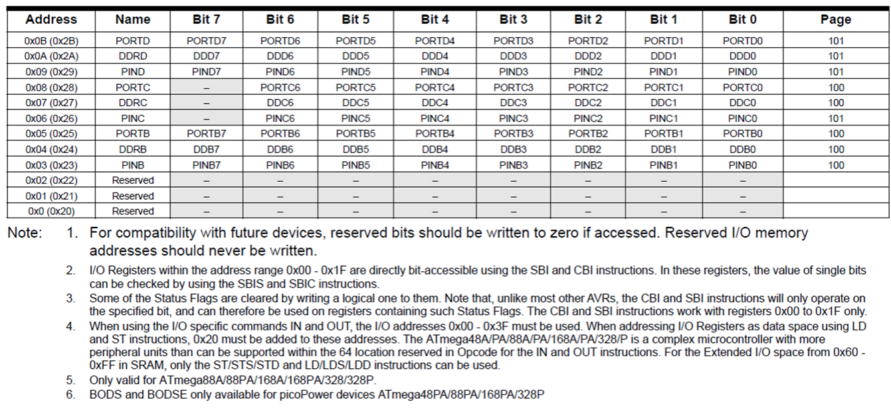
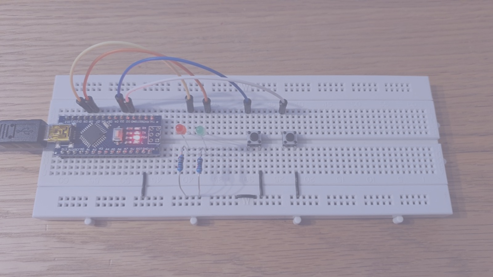
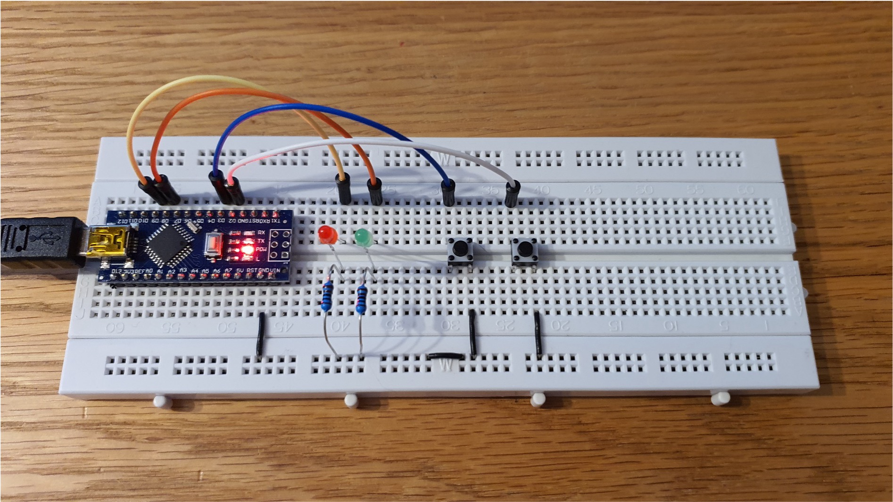
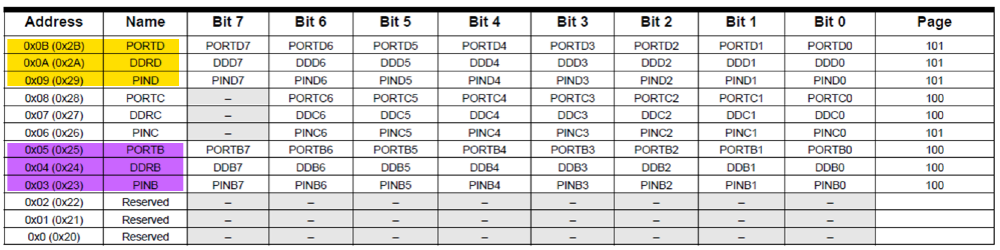
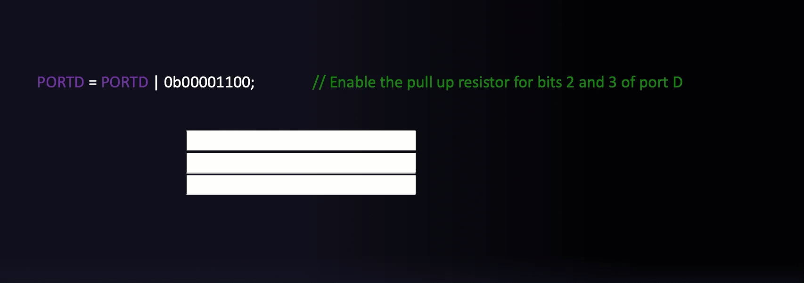

Interfacing to digital I/O with C#

Introduction#

Topics Covered#
In this section we will be looking at two different approaches to reading and writing to ports on a microcontroller. The first approach discussed is using library files and predefined functions to control I/O ports as is conventionally done with the Arduino IDE, the second approach will look at accessing I/O bits directly using bit masks to select the desired pins. The section begins by looking at digital inputs and outputs before moving onto to show a detailed example program implemented on the Atmel ATmega328 microcontroller.
Contents#
Bit masking
Digital I/O example using LEDs and push buttons.
How does I/O work using the Arduino IDE#

Image source: This Photo by Unknown Author is licensed under CC BY-NC
Digital Control#
Imagine a circuit with LEDs connected to D8 and D9 of the Atmel ATmega328 microcontroller.
Both LEDs will be wired to PORTD. How can the LED at D9 be switched on without changing the state of the LED at D8?
The answer is to use the pin functions provided by the Arduino library. These functions allow programmers to gain direct access to particular pins
Using the Arduino IDE, the programmer would first define the pin as an output and then use the digitalWrite function to write HIGH (integer 0x1) or LOW (integer 0x0) to the pin as required.
void setup() {
// put your setup code here, to run once:
pinMode(9, OUTPUT);
}
void loop() {
// put your main code here, to run repeatedly:
digitalWrite(9, HIGH);
delay(1000);
digitalWrite(9, LOW);
}
This is because for each “sketch” the Arduino IDE automatically includes a the include file Arduino.h and the library file wiring_digital.c[1].
The include file Arduino.h#
Amongst a number of other definitions[2], the Arduino.h file contains the declarations for the commonly used digital I/O functions: pinMode, digitalWrite and digitalRead as well as the functions used for Analog I/0: analogRead, analogReference and analogWrite to be discussed in Introduction to Assembly Language.
void pinMode(uint8_t pin, uint8_t mode);
void digitalWrite(uint8_t pin, uint8_t val);
int digitalRead(uint8_t pin);
int analogRead(uint8_t pin);
void analogReference(uint8_t mode);
void analogWrite(uint8_t pin, int val);
pinModetakes two unsigned 8-bit integers as arguments and has return type of void (returns nothing).
digitalWritetakes two unsigned 8-bit integers as arguments and has return type of void (returns nothing).
digitalReadtakes one unsigned 8-bit integer as an argument and returns a signed integer value.
Remember the function declaration only tells the compiler about a function’s name, return type, and arguments.
The actual definition of these functions lies elsewhere in the Arduino core library.
The library file wiring_digital.c#
The wiring_digital.c file contains the definitions for the pinMode, digitalWrite and digitalRead functions[3].
Extracts from wiring_digital.c#
pinMode (line 29)#
void pinMode(uint8_t pin, uint8_t mode)
{
uint8_t bit = digitalPinToBitMask(pin);
uint8_t port = digitalPinToPort(pin);
volatile uint8_t *reg, *out;
if (port == NOT_A_PIN) return;
// JWS: can I let the optimizer do this?
reg = portModeRegister(port);
out = portOutputRegister(port);
if (mode == INPUT) {
uint8_t oldSREG = SREG;
cli();
*reg &= ~bit;
*out &= ~bit;
SREG = oldSREG;
} else if (mode == INPUT_PULLUP) {
uint8_t oldSREG = SREG;
cli();
*reg &= ~bit;
*out |= bit;
SREG = oldSREG;
} else {
uint8_t oldSREG = SREG;
cli();
*reg |= bit;
SREG = oldSREG;
}
}
function digitalWrite (line 138)#
void digitalWrite(uint8_t pin, uint8_t val)
{
uint8_t timer = digitalPinToTimer(pin);
uint8_t bit = digitalPinToBitMask(pin);
uint8_t port = digitalPinToPort(pin);
volatile uint8_t *out;
if (port == NOT_A_PIN) return;
// If the pin that support PWM output, we need to turn it off
// before doing a digital write.
if (timer != NOT_ON_TIMER) turnOffPWM(timer);
out = portOutputRegister(port);
uint8_t oldSREG = SREG;
cli();
if (val == LOW) {
*out &= ~bit;
} else {
*out |= bit;
}
SREG = oldSREG;
}
Advantages and Disadvantages of using the Arduino IDE#
Advantages#
Code is cross processor compatible.
Code is easy to understand.
Code controls a named pin on the board and is therefore easy to wire up
Changing code to use different pins is trivial..
Disadvantages#
Code is slower than accessing the ports directly.
You cannot perform multiple bit reads or writes in a single action.
Bitmasking#
Image source: This Photo by Unknown Author is licensed under CC BY-NC
Logical Bitwise Operators#
As we saw in Bitwise logical operators in C, there is a group of operators within the C programming language which are referred to as bitwise logical operators (Table 3).
Logical Operation |
Operator |
|---|---|
AND |
|
OR |
|
XOR |
|
NOT |
|
Shift right |
|
Shift left |
|
These are important when working with inputs and outputs as they can be used to apply masks to ports (registers) to work with only specific bits[4].
Truth tables for the bitwise logical operators.#
The truth tables for bitwise logical operators are given for AND (&) in Table 4, OR (|) in Table 5, XOR (^) in Table 6, and NOT (^) in Table 7.
A |
B |
Out |
|---|---|---|
0 |
0 |
0 |
0 |
1 |
0 |
1 |
0 |
0 |
1 |
1 |
1 |
A |
B |
Out |
|---|---|---|
0 |
0 |
0 |
0 |
1 |
1 |
1 |
0 |
1 |
1 |
1 |
1 |
A |
B |
Out |
|---|---|---|
0 |
0 |
0 |
0 |
1 |
1 |
1 |
0 |
1 |
1 |
1 |
0 |
A |
Out |
|---|---|
0 |
1 |
1 |
0 |
Masking#
Masking Example#
Consider an example where you want to know if bits 0 and 7 are both on / high / logic 1 but you don’t care about any other bits.
Programmatically, this would be done using an if statement with a bitwise and operator:
input = 0b10100011;
if (input & 0b10000001 == 0b10000001 )
{
// do something;
}
If bits 0 and 7 are HIGH
If bits 0 and 7 are LOW
In both examples, it doesn’t matter what bits 1-6 are, they don’t affect the result.
Let us revisit the task#
Imagine a circuit with LED’s connected to D8 and D9 of the Atmel ATmega328 microcontroller.
{kind=link}

Fig. 62 Schematic of Arduino nano board identifying pins D8 and D9[5].#
How can the LED at D9 be switched on without changing the state of the LED at D8?
Atmel ATmega328 I/0 Architecture Recap#

Recall:
Three I/O memory address locations are allocated for each port, one each for the Data Register – PORTx, Data Direction Register – DDRx, and the Port Input Pins – PINx, where x refers to the numbering letter for the port (B, C or D in our case).
Solution with bit masking#
Imagine a circuit with LED’s connected to D8 and D9 of the Atmel ATmega328 microcontroller.
How can the LED at D9 be switched on without changing the state of the LED at D8?
D8 = PortB0
D9 = PortB1
Let us assume Port B currently reads \(1010\,0001\) and we execute[6]:
PORTB = PORTB | 0b00000010;
To turn but 9 off, we use the logical AND.
PORTB = PORTB & 0xb11111101;
Digital I/O Example Program#
{kind=link}

Example - breadboard#
Consider the Ardunino nano circuit shown in Fig. 63. The left and right push buttons are connected to the digital inputs D3 and D2 on the Arduino nano board. These correspond with Port D Bits 3 and 2 on the Atmega328 microcontroller.
{kind=link}

Fig. 63 A photograph of the example circuit which has two buttons and two LEDs. When the left button is pressed, the red LED lights up. When the right button is pressed the green LED lights up.#
When the left push button is pressed, the red LED (Port B Bit 1) is illuminated and the green LED (Port B Bit 0) illuminated when the right push button is pressed.
The buttons are digital inputs with pull-up resistors (so active low) and are connected to pins 1 and 2 of port D respectively.
What does the code for this look like without using the predefined Arduino functions – pinMode and digitalRead?
Example Code - statement 1#
#include <stdint.h>
#include is a preprocessor directive used to include header files which contain definitions and declarations of existing and frequently used functions.
The <> variant is used for system header files that are included as part of the C language compiler.
The stdint.h header file provides a set of type definitions (typedefs) that specify exact-width integer types, together with the defined minimum and maximum allowable values for each type, using macros. The types are tabulated in Table 8.
Specifier |
Signing |
Bits |
Bytes |
Minimum Value |
Maximum Value |
|---|---|---|---|---|---|
|
Signed |
8 |
1 |
\(-2^7\) which equals \(-128\) |
\(2^7 - 1\) which equals \(127\) |
|
Signed |
8 |
1 |
\(0\) |
\(2^8 - 1\) which equals \(255\) |
|
Signed |
16 |
2 |
\(-2^7\) which equals \(-32,768\) |
\(2^7 - 1\) which equals \(32,767\) |
|
Signed |
16 |
2 |
\(0\) |
\(2^{16} - 1\) which equals \(65,535\) |
|
Signed |
32 |
4 |
\(-2^{31}\) which equals \(-2,147,483,648\) |
\(2^{31} - 1\) which equals \(2,147,483,647\) |
|
Signed |
32 |
4 |
\(0\) |
\(2^{32} - 1\) which equals \(4,294,967,295\) |
|
Signed |
64 |
8 |
\(-2^{63}\) which equals \(-9,223,372,036,854.775,808\) |
\(2^{63} - 1\) which equals \(9,223,372,036,854.775,807\) |
|
Signed |
32 |
4 |
\(0\) |
\(2^{64} - 1\) which equals \(18,446,744,073,709,551,615\) |
Example code - aligning port names to the I/O memory map#
The I/O memory map is shown in Fig. 64.
{kind=link}

Fig. 64 Memory map for the I/O ports in the Atmel ATmega328#
We need to map a port to the address used by the port. We use #define for this:
Preprocessor directive:
#define
Convenient name that the processor can use in code:
PORTD
The size is an 8 bit unsigned integer:
unit8_t
Memory address of the specific register from the datasheet (reproduced here as Fig. 64):
0x2B.
The full command is[7]:
#define PORTD(*(volatile unint8_t *)(0x2B))
The full set up which sets up the ports, data direction registers and pins is:
//I/O and ADC Register definitions taken from datasheet
#define PORTD (*(volatile uint8_t *)(0x2B))
#define DDRD (*(volatile uint8_t *)(0x2A))
#define PIND (*(volatile uint8_t *)(0x29))
#define PORTB (*(volatile uint8_t *)(0x25))
#define DDRB (*(volatile uint8_t *)(0x24))
#define PINB (*(volatile uint8_t *)(0x23))
Example Code - the main function#
This is the starting point for any program[8].
int main (void)
{
// code
return 0;
}
The return type is declared as integer meaning the function returns some integer even ‘0’ at the end of the program execution. By convention, a return of ‘0’ represents the successful execution of a program.
Example Code - Set data direction registers#

Example Code - Set pull-ups for inputs and initialize outputs#
{kind=link}

Example Code - The infinite for loop#
The infinite for loop is quite a common idiom in C:
for (;;;)
{
// code that repeats forever
}
Any code that is placed inside the for loop will run forever.
The Arduino IDE does the same thing behind the scenes - void loop is actually a function that is repeatedly called inside an infinite for loop[8].
int main(void)
{
setup();
for (;;) {
loop();
}
return 0;
}
{kind=link}
The full program#
The full program is available as a GitHub gist: main.c. You will need a fully featured IDE, such as Atmel (now Microchip) Studio, to compile and upload the code to the Ardino nano board.
Summary#
In this section we have:
Begun to look at I/O operations on the Atmel Atmega 328 microcontroller including the registers and checking/setting states based on flow control statements.
Introduced bit masking to read/write individual bits of a register without affecting the remainder of it.
Looked at a detailed example program which uses the state of two pushbuttons to set whether an LED is illuminated or not.
On Canvas#
This week on the canvas course page, you will find the sample programs from today’s lecture, look through these and ensure you are confident in how they work and how the masks are defined. There is also a short quiz to test your knowledge on these topics.